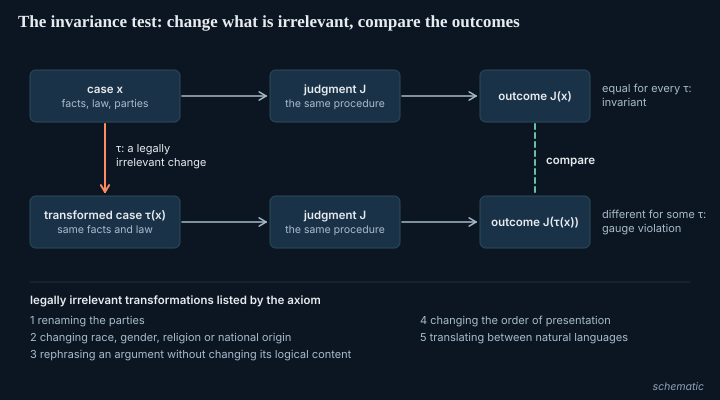
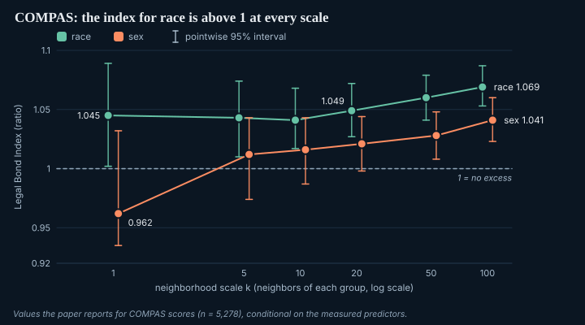
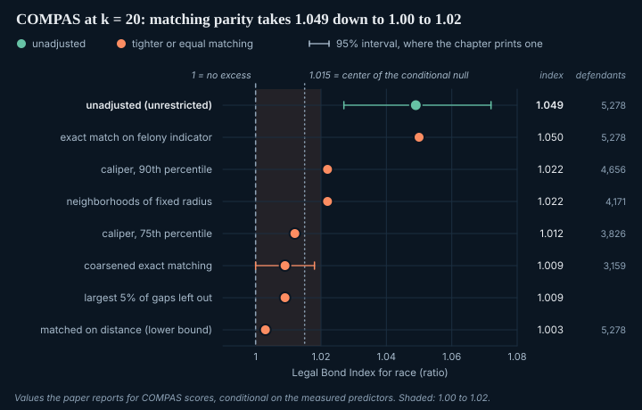

Chapter 8: Equal Protection as Gauge Invariance
“Our Constitution is color-blind, and neither knows nor tolerates classes among citizens.” — Justice John Marshall Harlan, dissenting in Plessy v. Ferguson (1896)
RUNNING EXAMPLE — JUDGE RIVERA’S DOCKET
A criminal case arrives on Judge Rivera’s desk that will test everything she believes about fairness. Marcus Williams, a twenty-six-year-old Black man, has been convicted of possession with intent to distribute — a charge arising from a traffic stop on the Bay Bridge. The presentence report recommends 48 to 60 months. The federal sentencing guidelines, applied mechanically, support the recommendation. The case file is unremarkable.
But Rivera does something she has trained herself to do with every sentencing decision. She performs a mental experiment. She takes the case file and, in her mind, she changes one thing: the defendant’s race. She imagines the same facts — the same quantity of narcotics, the same criminal history score, the same traffic stop, the same arresting officer’s testimony — but with a white defendant named Matthew Wilson. She asks herself: would I impose the same sentence?
The question unsettles her. Not because she believes she is biased — she has spent her career fighting for equal justice — but because the empirical data says that federal judges, as a population, do not pass this test. The U.S. Sentencing Commission’s own research shows that Black men receive sentences approximately 19.1% longer than white men convicted of similar crimes, after controlling for criminal history, offense severity, and other legally relevant factors. Something in the system is not invariant under the transformation she just performed.
This chapter gives that transformation a name: a gauge transformation. It gives the invariance requirement a mathematical form: gauge invariance under the equal protection symmetry group. And it gives the violation a quantitative measure: the Legal Bond Index. Rivera’s mental experiment — swapping the defendant’s race and checking whether the outcome changes — is not merely a thought exercise. It is the empirical protocol for measuring gauge invariance in the legal system.
The Invariance Requirement
What Equal Protection Demands
The Fourteenth Amendment to the United States Constitution contains fourteen words that have generated more litigation than perhaps any other clause in American law: “No State shall … deny to any person within its jurisdiction the equal protection of the laws.”
The standard interpretation of this clause, developed across a century and a half of case law, is that it prohibits the government from treating similarly situated persons differently on the basis of certain characteristics — race, national origin, religion, sex, and a growing list of other classifications. The Supreme Court has developed a tiered framework for evaluating equal protection claims: strict scrutiny for race and national origin, intermediate scrutiny for sex, rational basis review for everything else.
This interpretation is correct as far as it goes. But it does not go far enough. It treats equal protection as a rule — a prohibition on certain kinds of government action. It does not identify the structural principle that the rule implements.
The structural principle is this: equal protection is an invariance requirement. It demands that the legal evaluation function — the function that maps legal situations to legal outcomes — be unchanged when certain features of the situation are transformed. The defendant’s race is changed; the outcome must stay the same. The plaintiff’s gender is changed; the outcome must stay the same. The party’s religion is changed; the outcome must stay the same.
This is not a metaphor. It is the definition of gauge invariance in mathematical physics: a system is gauge-invariant when its observable outputs are unchanged under transformations of its internal description. The race of a defendant is part of the description of the legal situation. If the legal outcome depends on race, the system is gauge-variant — it is sensitive to a feature of the description that should not affect the output.
From Physics to Law
In physics, gauge invariance arises from a fundamental insight: the laws of nature should not depend on arbitrary choices of description. Maxwell’s equations should give the same predictions whether you measure electric potential in volts or millivolts. The equations of general relativity should give the same predictions whether you use Cartesian or spherical coordinates. The observable physics must be invariant under these changes of description.
The mathematical formalization of this insight is gauge theory. A gauge transformation is a change of description that leaves the physics unchanged. A gauge symmetry is the group of all such transformations. A gauge-invariant quantity is one that does not change under any gauge transformation.
The legal analogue is exact. A legal gauge transformation is a change in the description of a legal situation that should leave the legal outcome unchanged. The protected characteristics — race, sex, religion, national origin — are the “coordinates” that can be changed without affecting the legal substance. The group of all such transformations is the equal protection symmetry group. A gauge-invariant legal system is one whose outcomes do not depend on these characteristics.
The analogy to coordinate invariance in physics is more than illustrative — it identifies a shared mathematical structure. In physics, gauge invariance under a continuous symmetry group implies a conservation law (Noether’s theorem). In law, gauge invariance under the equal protection symmetry group implies a balance law: the liability-damages balance of Chapter 5 (restated in Chapter 9), which requires that within a closed legal subsystem, entitlements are conserved under adjudication.
The Legal Invariance Principle
Formal Statement
The foundational axiom of equal protection, stated in the language of the Geometric Ethics programme, is the Legal Invariance Principle.
Axiom (Legal Invariance Principle — LIP). A legal judgment procedure $J_{\text{law}}$ is epistemically well-posed if and only if it is invariant under all legally irrelevant transformations:
$$J_{\text{law}}(\tau(x)) = J_{\text{law}}(x) \quad \forall \; \tau \in \mathcal{T}_{\text{irrelevant}}$$
where $\mathcal{T}_{\text{irrelevant}}$ includes:
- Renaming the parties (“Smith v. Jones” becomes “Doe v. Roe”)
- Changing the race, gender, religion, or national origin of the parties
- Rephrasing the legal arguments without changing their logical content
- Changing the order of presentation of evidence or arguments
- Translating between natural languages (for multilingual jurisdictions)
The LIP is not a new requirement imposed on the legal system from outside. It is a formalization of requirements the legal system already imposes on itself. Equal protection is transformation (2). Due process encompasses transformations (3) through (5). The principle that “like cases should be decided alike” — the bedrock of the rule of law — is the entire LIP.
The LIP as Already-Existing Law
This point deserves emphasis because it is easy to mistake the formalization for a proposal. The LIP is not a reform proposal. It is a mathematical statement of what the law already demands.
The Equal Protection Clause is invariance under transformation (2). When the Supreme Court says that racial classifications are subject to strict scrutiny, it is saying that the legal system must be approximately gauge-invariant under racial transformations — and that any gauge variance must be justified by a “compelling state interest” (an explicit exception to the invariance requirement, analogous to a symmetry-breaking term in a Lagrangian).
The Due Process Clauses of the Fifth and Fourteenth Amendments are invariance under transformations (3) through (4). Procedural due process requires that the outcome depend on the merits — the equivalence class of the legal situation — rather than on irrelevant features of presentation. If two descriptions of the same legal dispute produce different outcomes, the system has violated due process.
The Rule of Law itself — the principle that legal outcomes should be determined by law rather than by arbitrary power — is the full LIP. A legal system where the outcome depends on who the parties are (rather than what they did) or how the case is described (rather than what it involves) is not a legal system at all; it is rule by caprice wearing legal robes.
What the LIP Does Not Require
The LIP does not require that all persons be treated identically. It requires that persons be treated identically when all legally relevant features are identical. The distinction is crucial.
A criminal defendant with a prior felony conviction may receive a longer sentence than a first-time offender convicted of the same crime. This does not violate the LIP, because criminal history is a legally relevant feature — the two situations are not equivalent under legally irrelevant transformations. The LIP is violated only when two situations that differ solely in protected characteristics produce different outcomes.
The LIP also does not require blindness to protected characteristics in all contexts. Affirmative action, for example, explicitly considers race — and the Supreme Court has upheld (and, more recently, struck down) certain uses of race under the equal protection framework. The geometric framework clarifies this debate: affirmative action is a deliberate gauge-breaking term, introduced to counteract existing gauge violations in the system. Whether the breaking term is justified depends on whether it reduces total gauge violation — whether the system is closer to invariance with the term than without it.
RUNNING EXAMPLE — RIVERA’S MENTAL EXPERIMENT
Let us formalize Rivera’s mental experiment. She has a legal situation $x$ — the Marcus Williams case — with a specific set of attributes: offense conduct, criminal history, personal characteristics, case-specific circumstances. Among these attributes is race: $x_{\text{race}} = \text{Black}$.
She applies a gauge transformation $\tau_{\text{race}}$ that changes the defendant’s race to white while preserving all other attributes: $\tau_{\text{race}}(x)$ is the same case with a white defendant.
The LIP requires: $J_{\text{law}}(\tau_{\text{race}}(x)) = J_{\text{law}}(x)$. The sentence Rivera imposes on the hypothetical white defendant Matthew Wilson must equal the sentence she imposes on Marcus Williams.
Rivera examines her reasoning. The guidelines calculation is mechanical — it depends on offense level and criminal history category, not on race. The guidelines produce the same range for both defendants. But sentencing is not purely mechanical. Rivera has discretion within the guidelines range and, under United States v. Booker, beyond it. Her assessment of “the history and characteristics of the defendant” (18 U.S.C. § 3553(a)(1)) is where gauge variance can enter. Does she unconsciously perceive Williams as more dangerous? Does she give Wilson the benefit of a doubt she withholds from Williams? Does the presentence report’s description of the defendant’s neighborhood — a proxy for race — influence her assessment?
The LIP does not ask Rivera to be superhuman. It asks her to be honest about whether her judgment function is invariant. The Legal Bond Index, defined below, will give her a quantitative tool for measuring whether, in practice, it is.

Figure 8.1. The test that the Legal Invariance Principle states. A case and a copy of it changed by a legally irrelevant transformation are put through the same judgment procedure, and the two outcomes are compared. If they agree for every such transformation the procedure is invariant. A difference is what the chapter calls a gauge violation. The five kinds of transformation are the ones the axiom lists, and equal protection is the second of them. This is a schematic of the definition.
The Judicial Bond Invariance Principle
Note (2026-11-26). Earlier versions of this section identified the group of bond-preserving transformations with the Hohfeldian gauge group $D_4 \rtimes D_4$ of Chapter 5 and called the equal protection group a subgroup of it. $D_4$ is withdrawn (Geometric Ethics v1.25, 2026-11-08; see the dated notes in Chapters 2 and 5), and a group that only relabels Hohfeldian positions contains no change of a protected characteristic. The JBIP is stated, as in the Technical Appendix, for the group $\mathcal{T}_{\text{bond-preserving}}$ of all transformations that preserve the bond structure. The Hohfeldian relabelings ($V_4$ on each square) and the equal protection group $G_{\text{EP}}$ are both subgroups of it. Nothing in the axiom, the theorem or the Legal Bond Index depends on the quarter-turn or on a group of order 64.
From General Invariance to Structural Invariance
The LIP requires invariance under all legally irrelevant transformations. This is a broad requirement — it encompasses everything from party renaming to argument rephrasing. The Judicial Bond Invariance Principle sharpens the requirement by identifying the specific mathematical structure whose preservation defines legal equivalence.
Axiom (Judicial Bond Invariance Principle — JBIP). Let $\tau$ be a transformation of a legal dispute description that preserves the Hohfeldian bond structure — the configuration of rights, duties, liberties, no-rights, powers, immunities, liabilities, and disabilities among the parties. Then the legal evaluation must be unchanged:
$$J_{\text{law}}(\tau(x)) = J_{\text{law}}(x) \quad \forall \; \tau \in \mathcal{T}_{\text{bond-preserving}}$$
The JBIP says: if two legal situations have the same Hohfeldian structure — the same web of jural relations among the parties — they must receive the same legal evaluation, regardless of any other differences in description.
The JBIP is the Bond Invariance Principle (BIP) from Geometric Ethics, specialized to law. In Geometric Ethics, the BIP requires that moral evaluations be invariant under transformations that preserve the bond structure among affected parties. In law, the “bonds” are Hohfeldian legal relations — the fundamental jural positions that define who owes what to whom.
The Relationship Between LIP and JBIP
The JBIP is stronger than the LIP. The LIP says that legally irrelevant transformations should not change the outcome. The JBIP specifies what counts as legally relevant: the Hohfeldian bond structure. Any transformation that preserves this structure is legally irrelevant, even if it changes features that seem legally relevant on the surface.
Consider two cases:
- Case A: A landlord refuses to rent to a tenant because of the tenant’s race. The tenant sues under the Fair Housing Act.
- Case B: A landlord refuses to rent to a tenant because of the tenant’s religion. The tenant sues under the Fair Housing Act.
The LIP says these cases should receive the same legal evaluation if all legally relevant features are the same. But what are the legally relevant features? The LIP does not specify.
The JBIP provides the answer: the legally relevant features are the Hohfeldian bonds. In both cases, the structure is identical:
- The tenant has a right to non-discriminatory treatment (under the Fair Housing Act).
- The landlord has a correlative duty not to discriminate.
- The landlord has breached this duty (by refusing to rent on a prohibited basis).
- The tenant has the power to seek a remedy (by filing suit).
- The landlord has a correlative liability (exposure to the remedy).
The specific protected characteristic (race vs. religion) does not change the Hohfeldian bond structure. Therefore, by the JBIP, the legal evaluation must be the same.
This is not a trivial observation. It resolves a genuine difficulty in equal protection law: the question of whether different protected characteristics deserve different levels of protection. The Supreme Court has held that race is subject to strict scrutiny while sex is subject to intermediate scrutiny — a distinction that creates an asymmetry between protected characteristics. The JBIP suggests this asymmetry is problematic: if the Hohfeldian bond structure is the same (right to non-discrimination, duty not to discriminate, breach, power, liability), the legal evaluation should be the same regardless of which protected characteristic is at issue.
What the JBIP Adds
The JBIP does three things that the LIP alone does not:
-
It identifies the invariant. The LIP says “legally irrelevant features should not matter,” but does not specify which features are legally irrelevant. The JBIP specifies: a feature is legally irrelevant if changing it does not change the Hohfeldian bond structure.
-
It provides a test. To check whether two cases should receive the same evaluation, compute their Hohfeldian bond structures. If the structures are isomorphic, the evaluations must match. This is a finite computation on a finite structure.
-
It connects to the gauge group. The set of bond-preserving transformations is a group, $\mathcal{T}_{\text{bond-preserving}}$, which contains the Hohfeldian relabelings of Chapter 5. The JBIP is invariance under this specific group, not under an undefined collection of “legally irrelevant” transformations.
Equal Protection as Gauge Symmetry
The Equal Protection Gauge Group
Equal protection is a subgroup of the full JBIP gauge group. The full group $\mathcal{T}_{\text{bond-preserving}}$ includes all bond-preserving transformations — renaming parties, swapping perspectives, composing first-order and second-order operations. The equal protection subgroup is the subset that changes protected characteristics while preserving everything else.
Definition (Equal Protection Gauge Group). The equal protection gauge group $G_{\text{EP}}$ is the subgroup of legal gauge transformations that alter the protected-class attributes of the parties while preserving:
- All factual attributes (what happened, when, where, how)
- All legal attributes (applicable law, jurisdiction, procedural posture)
- All Hohfeldian bonds (who owes what to whom)
The generators of $G_{\text{EP}}$ are the individual protected-class transformations:
- $\tau_{\text{race}}$: Change the race of a party
- $\tau_{\text{sex}}$: Change the sex of a party
- $\tau_{\text{religion}}$: Change the religion of a party
- $\tau_{\text{origin}}$: Change the national origin of a party
- $\tau_{\text{age}}$: Change the age of a party (in contexts where age is protected)
- $\tau_{\text{disability}}$: Change the disability status of a party (in contexts where disability is protected)
Each generator is an involution ($\tau^2 = \text{id}$ for binary attributes like sex) or has finite order (for multi-valued attributes like race). The group $G_{\text{EP}}$ is the group generated by these transformations.
The Invariance Theorem
Theorem (Equal Protection as Invariance Constraint). The Equal Protection Clause requires that the legal evaluation be invariant under transformations of protected-class attributes. In any closed bilateral dispute, this invariance implies the entitlement balance: the signed sum of Hohfeldian positions, weighted by the edge weights of $\mathcal{K}$, is invariant under adjudication.
Proof sketch. Let $\tau_g \in G_{\text{EP}}$ be a transformation that changes a party’s protected-class attribute while preserving all legally relevant facts. Equal protection requires $J_{\text{law}}(\tau_g(x)) = J_{\text{law}}(x)$.
In the judicial complex, this means: for any two vertices $c_i, c_j$ that differ only in the protected-class attributes of the parties, $J_{\text{law}}(c_i) = J_{\text{law}}(c_j)$. The outcome must be the same.
Combined with the Hohfeldian correlative structure (every right entails a duty, every power entails a liability), this forces the entitlement balance: whatever the court awards to one party, it must impose correlationally on the other. The balance is that within a fixed legal framework, adjudication redistributes entitlements without creating or destroying them. This is the legal analogue of a conservation law enforced by the correlative structure of Hohfeldian positions. $\square$
What the Theorem Says
The theorem connects two ideas that seem unrelated: equal protection (a constitutional guarantee) and entitlement balance (a structural property of the Hohfeldian system). The connection runs through gauge invariance.
In physics, gauge invariance under a continuous symmetry implies a conservation law. The U(1) gauge symmetry of electromagnetism implies conservation of electric charge. The SU(3) gauge symmetry of quantum chromodynamics implies conservation of color charge. The symmetry generates the conservation law.
In law, the gauge invariance of equal protection implies the entitlement balance. If the legal system must produce the same outcome regardless of the parties’ protected characteristics, then the system cannot create or destroy entitlements based on those characteristics. Every right awarded to a plaintiff must be matched by a correlative duty imposed on the defendant. Every power exercised must create a correlative liability. The balance is not a separate requirement — it is a consequence of the invariance.
Disparate Impact as Gauge Violation
The distinction between “disparate treatment” and “disparate impact” in anti-discrimination law has a clean geometric interpretation.
Disparate treatment is an explicit gauge violation: the legal system consciously uses a protected characteristic as an input to the evaluation function. A law that says “persons of race $R$ shall receive treatment $T$” is gauge-variant by construction — it explicitly includes $x_{\text{race}}$ as an argument of $J_{\text{law}}$.
Disparate impact is an implicit gauge violation: the legal system does not explicitly use the protected characteristic, but its outputs are correlated with it. A facially neutral hiring test that disproportionately excludes members of a protected group is gauge-variant in its effects even if its formulation does not mention the protected characteristic.
In gauge theory, the distinction is between a manifestly gauge-variant Lagrangian (one that explicitly depends on the gauge field) and a hidden gauge violation (one where the Lagrangian is gauge-invariant but the ground state — the vacuum — is not). The latter is spontaneous symmetry breaking: the equations are symmetric but the solutions are not.
Disparate impact is spontaneous gauge breaking in the legal system. The laws are facially neutral (the Lagrangian is gauge-invariant), but the outcomes are asymmetric (the ground state breaks the symmetry). The legal system has a “vacuum” — the baseline distribution of social and economic conditions — that is not gauge-invariant. Facially neutral laws that operate on this asymmetric baseline inherit the asymmetry.
This explains why disparate impact is harder to prove than disparate treatment: you must show that the gauge variance is in the outputs, not the inputs. It is the legal analogue of detecting spontaneous symmetry breaking, which requires measuring the ground state rather than the equations of motion.
RUNNING EXAMPLE — RIVERA TESTS FOR GAUGE VARIANCE
Rivera turns to her court’s data. She has access to the sentencing records of the Northern District of California — thousands of cases, each with the defendant’s demographics, offense characteristics, criminal history, and the sentence imposed. She wants to know: is the sentencing function of this court gauge-invariant under racial transformations?
The test is conceptually simple. Take a case with defendant race $r_1$. Apply $\tau_{\text{race}}$ to change the race to $r_2$, holding all other variables fixed. Check whether the sentence changes. Repeat across all cases. Average the changes.
In practice, the test cannot be performed directly — you cannot replay the same case with a different defendant. But you can approximate it statistically. Identify pairs of cases that are matched on all legally relevant variables — offense level, criminal history category, district, year, judge, plea status — but differ in defendant race. Compare the sentences. The average difference is the estimated gauge violation.
The U.S. Sentencing Commission has performed exactly this analysis. The result: after controlling for offense and offender characteristics, Black male defendants received sentences approximately 19.1% longer than similarly situated white male defendants. This is a gauge violation of 19.1% — the sentencing function changes by nearly a fifth of its value when the racial “coordinate” is transformed.
Rivera knows this is a population-level statistic, not a statement about any individual judge. Her own sentences may be perfectly gauge-invariant. But the system is not, and she sits within that system. The question is whether the framework can move from population-level diagnosis to case-level prescription.
The Legal Bond Index
Definition and Computation
The Legal Bond Index quantifies the degree to which a legal judgment system violates the JBIP. It is the legal analogue of the Bond Index from Geometric Ethics — a single number that measures how far a system is from invariance.
Definition (Legal Bond Index). The Legal Bond Index $\text{LBI} \in [0, 1]$ quantifies the degree to which a legal judgment system violates the JBIP:
$$\text{LBI} = \frac{1}{|S|} \sum_{s \in S} \| J_{\text{law}}(\tau(s)) - J_{\text{law}}(s) \|$$
where $S$ is a set of test cases, $\tau$ ranges over bond-preserving transformations (renaming parties, rephrasing without changing Hohfeldian structure, translating, etc.), and the norm measures the distance between legal outcomes.
The form above is the mean absolute change, which lies in $[0, 1]$ when outcomes are scaled to that range. The Technical Appendix gives the normalized form used in computation, in which each change is divided by the size of the original outcome. Chapter 11 averages the normalized form over outcome dimensions, and Chapter 15 defines a variant for AI systems, with Mahalanobis distances between system outputs and its own normalization. Values of the different forms are not directly comparable.
A further form, a ratio centered on 1, is the one that has been computed on legal data. It is defined in the section “The Measured Form of the Index” below. Its values are on a different scale again.
An LBI of 0 means perfect invariance: the system produces identical outcomes for equivalent cases. An LBI of 1 means maximum variance: the system’s outcomes are as different as possible for equivalent cases. Any value between 0 and 1 indicates partial gauge violation.
Decomposing the LBI
The LBI can be decomposed along the generators of the gauge group to identify which transformations cause the most variance:
$$\text{LBI}_{\text{race}} = \frac{1}{|S|} \sum_{s \in S} \| J_{\text{law}}(\tau_{\text{race}}(s)) - J_{\text{law}}(s) \|$$
$$\text{LBI}_{\text{sex}} = \frac{1}{|S|} \sum_{s \in S} \| J_{\text{law}}(\tau_{\text{sex}}(s)) - J_{\text{law}}(s) \|$$
$$\text{LBI}_{\text{socioeconomic}} = \frac{1}{|S|} \sum_{s \in S} \| J_{\text{law}}(\tau_{\text{SES}}(s)) - J_{\text{law}}(s) \|$$
This decomposition tells you not just how much gauge violation there is, but where it comes from. A system with $\text{LBI}_{\text{race}} = 0.19$ and $\text{LBI}_{\text{sex}} = 0.08$ has more racial gauge violation than sex-based gauge violation. The decomposition guides remediation: focus reform efforts on the transformations with the highest LBI.
Empirical Baseline
The parent framework — Geometric Ethics — established an empirical baseline for the Bond Index: 0.155, calibrated from 20,030 normative evaluations. This baseline measures how much moral evaluations change under meaning-preserving transformations of the scenario description. It is not a standard for legal systems; it is a starting point for calibration.
For legal systems, the LBI should be computed from actual sentencing data, actual bail decisions, actual verdict patterns. The U.S. Sentencing Commission data suggests that $\text{LBI}_{\text{race}}$ for federal sentencing is approximately 0.19. State-level data suggests even higher values. The LBI provides a common currency for comparing gauge violation across jurisdictions, across time, and across types of legal decisions.
The figure of 0.19 restates the Commission’s 19.1% as a relative change. It is not a computation of the index from case data. One computation on legal data exists, for the scores of one risk-assessment algorithm, and it uses a different form of the index on a different scale. It is reported in the section “The Measured Form of the Index” below. Its headline value, a ratio of 1.049, cannot be set beside 0.155 or 0.19. For the forms defined above, the legal baseline remains unmeasured.
The Wilson Loop Test
In gauge theory, the most powerful test for gauge invariance is the Wilson loop: transport a quantity around a closed path and check whether it returns to its original value. If it does, the gauge field is trivial along that path. If it does not, there is a gauge violation — the “holonomy” of the loop is non-trivial.
Definition (Legal Wilson Loop). A legal Wilson loop $W(\gamma)$ is the holonomy of the legal connection around a closed path $\gamma$ in $\mathcal{K}$:
$$W(\gamma) = \mathcal{P} \exp\left( \oint_\gamma A_\mu \, dx^\mu \right)$$
where $A_\mu$ is the legal connection (encoding how Hohfeldian positions change under parallel transport through the case law) and $\mathcal{P}$ denotes path ordering.
In legal terms: take a legal principle and apply it through a sequence of cases that forms a closed loop — ending at the same factual configuration where you started. If the principle arrives back changed — if the Hohfeldian labels have shifted — the loop has detected an inconsistency.
Proposition (Wilson Loop Test for Consistency). A body of case law is internally consistent if and only if all Wilson loops in the precedent-defined connection are trivial. Non-trivial Wilson loops identify specific circuits of legal reasoning that produce contradictions.
For equal protection specifically, the Wilson loop test asks: start with a case involving a defendant of race $r_1$. Follow the legal reasoning through a chain of precedents. Apply those precedents to a case with a defendant of race $r_2$. Follow the reasoning back through another chain of precedents to a case equivalent to the starting case. Has the Hohfeldian structure changed? If it has, the precedent system contains a racial gauge violation that is detectable by the loop.
The Measured Form of the Index
One Measurement on Legal Data
The forms of the Legal Bond Index defined above all ask for the same operation. Take a case, change a protected characteristic, evaluate the case again, and compare. For a decided case that operation cannot be performed. The index has therefore been defined in this chapter and not computed.
One computation now exists. The paper “The Legal Bond Index: A Matched-Neighbourhood Diagnostic of Algorithmic Disparity, Applied to COMPAS” (Bond, in press, Journal of Science and Law) defines a form of the index that needs only recorded data, and computes it for one risk-scoring algorithm on one public dataset. It is the only measurement on legal data reported in this volume. Every other index value in this chapter is illustrative.
Three things should be said before the numbers. First, the object measured is the score of an algorithm, not the judgment of a court. Second, the paper stands on its own. Its author note says that it “makes no use of” the judicial complex or the invariance machinery, so its result measures a disparity in one set of scores and is not a test of the geometric framework of this book. Third, the paper states what reduces its finding and what the finding cannot show at the same length as the finding itself. This section does the same.
The Matched-Neighborhood Definition
Let each individual $i$ have a vector $\mathbf{x}_i \in \mathbb{R}^d$ of legitimate predictors, a binary protected attribute $g_i \in \{0, 1\}$, and a score $f(i)$ assigned by the algorithm. Distance between individuals is the Mahalanobis distance on the legitimate predictors:
$$d_M(\mathbf{x}_i, \mathbf{x}_j) = \sqrt{(\mathbf{x}_i - \mathbf{x}_j)^T \Sigma^{-1} (\mathbf{x}_i - \mathbf{x}_j)}$$
where $\Sigma$ is the empirical covariance of the predictors over the population. This is the metric of Chapter 4 applied to a different space. Its coordinates are recorded predictors of a score, not the eight legal dimensions.
Definition (Legal Bond Index, Matched-Neighborhood Form). At neighborhood scale $k \geq 1$, the Legal Bond Index of an algorithm $f$ with respect to a protected attribute $g$ is
$$\text{LBI}_k(f, g) = \frac{\mathbb{E}_i \left[ \operatorname{mean}_{j \in N_k(i, \neg g_i)} \lvert f(i) - f(j) \rvert \right]}{\mathbb{E}_i \left[ \operatorname{mean}_{j \in N_k(i, g_i)} \lvert f(i) - f(j) \rvert \right]}$$
where $N_k(i, c)$ is the set of the $k$ individuals other than $i$ that are nearest to $i$ in the metric $d_M$ and have protected attribute $c$, where $\neg g_i = 1 - g_i$, and where $\mathbb{E}_i$ is the mean over individuals.
The numerator is the average score gap between an individual and the $k$ nearest neighbors of the other group. The denominator is the average score gap between an individual and the $k$ nearest neighbors of the same group. A value of 1 means that scores diverge no more across the protected attribute than within it, among neighbors matched on the stated predictors. A value above 1 means that they diverge more. A value below 1 means that they diverge less.
The scale $k$ is the number of neighbors of each group that are used. Small $k$ compares tight matches, with more sampling noise. Large $k$ gives up tightness for stability. No scale is privileged in advance, so the paper treats the whole curve $k \mapsto \text{LBI}_k$ over scales fixed beforehand as the object of inference, and uses $k = 20$ as an illustrative scale for detailed diagnostics.
How This Form Relates to the Others
The forms defined earlier in this chapter, in Chapter 5, in Chapter 11 and in Chapter 15 are transformation forms. Each compares a case with a transformed copy of itself, and each equals 0 under perfect invariance. They are the theoretical forms of this book. None has been computed on legal data, and the book has not fixed which of them is the definition.
The form of the paper is a comparison form. No case is transformed. Different people are compared, and the comparison across groups is divided by the same comparison within groups. It is a ratio centered on 1. It is the operational form of the index, the one that has been measured.
The two kinds meet at one point. The numerator of the ratio is what a matched-pair estimate of the mean absolute change would be, the mean absolute score gap between each individual and matched neighbors of the other group. On the COMPAS data at $k = 20$ that gap is 2.323 deciles. It is far from zero because matched neighbors are different people, whose scores differ for many reasons that have nothing to do with the protected attribute. The gap to matched neighbors of the same group, 2.215 deciles, shows how large that common part is. The ratio $2.323 / 2.215 = 1.049$ sets the one against the other. A transformation form needs no such denominator, because a case compared with its own copy shows no gap at all when nothing depends on the characteristic that was changed.
The scales must therefore not be mixed. A ratio of 1.049 is not an index of 0.049 on the scale from 0 to 1. It is not comparable with the illustrative values 0.19 and 0.08 of this chapter, with the threshold 0.05 of Chapter 15, or with the moral-domain figure 0.155. None of those values can be converted into the ratio, and the ratio cannot be converted into any of them.
The COMPAS Result
COMPAS is a commercial instrument that scores a defendant from 1 to 10 for the risk of recidivism within two years. The data are the file that ProPublica published for Broward County, Florida, which holds 7,214 records. ProPublica’s standard filter leaves 6,172. The restriction to African-American and Caucasian defendants leaves $n = 5{,}278$, of whom 3,175 are African-American and 2,103 are Caucasian. The score is the general recidivism decile. The legitimate predictors are six: age, the count of adult prior offenses, three counts of juvenile offenses (felony, misdemeanor and other), and an indicator that the current charge is a felony.
The index was computed at six scales fixed in advance, for race and for sex.
| Scale $k$ | Index for race | 95% interval | Index for sex | 95% interval |
|---|---|---|---|---|
| 1 | 1.045 | 1.002 to 1.089 | 0.962 | 0.935 to 1.032 |
| 5 | 1.043 | 1.010 to 1.074 | 1.012 | 0.974 to 1.043 |
| 10 | 1.041 | 1.017 to 1.068 | 1.016 | 0.987 to 1.043 |
| 20 | 1.049 | 1.027 to 1.072 | 1.021 | 0.998 to 1.044 |
| 50 | 1.060 | 1.041 to 1.079 | 1.028 | 1.008 to 1.048 |
| 100 | 1.069 | 1.053 to 1.087 | 1.041 | 1.023 to 1.060 |
The intervals are pointwise, one for each scale. They come from a bootstrap of 1,000 replicates in which the neighborhoods are formed again inside every replicate, because the same defendant serves as a neighbor of many others.
The curve for race lies above 1 at every scale, between 1.041 and 1.069, and every interval excludes 1, narrowly at $k = 1$. At $k = 20$ the index is 1.049. When defendants are matched on the six predictors, COMPAS scores diverge on average about 5% more across race than within race. The curve, not any single point on it, is the finding.
The curve for sex is not distinguishable from 1 at scales up to 20, and the global tests described below do not reject for sex ($p = 0.39$ for the plain permutation test and $p = 0.90$ for the conditional test). The paper withdraws the claim of an earlier version that there is a smaller effect for sex. It reports the index for sex as a methodological comparison and not as an alleged violation, since courts have upheld the express use of sex in risk assessment.
The index is largest when the score is cut at the threshold that ProPublica used, a decile of 5 or more, which is the medium-or-high class. There the index is 1.092. Matched neighbors of the other race disagree on the class 37.3% of the time, against 34.2% for matched neighbors of the same race. That is an excess of 3.1 percentage points, or 9.2% in relative terms. An index of 1.092 is a relative increase in disagreement of 9.2%, not an increase of nine points. At the threshold of a decile of 8 or more, the high class alone, the index is 1.026 (24.6% against 24.0%).
The disparity is not symmetric. Computed with African-American defendants as the focal group the index at $k = 20$ is 1.027, and with Caucasian defendants as the focal group it is 1.087.

Figure 8.2. The matched-neighborhood Legal Bond Index for COMPAS scores at the six neighborhood scales, for race and for sex. The horizontal axis is the scale k, the number of neighbors of each group, on a logarithmic scale. The vertical axis is the index, and the dashed line at 1 marks no excess. Each bar is the pointwise 95% interval. The curve for race lies above 1 at every scale, and the intervals for sex include 1 at scales up to 20. The values are those the paper reports for COMPAS scores, conditional on the measured predictors.
What Reduces the Figure
A ratio of this kind can be inflated mechanically. Nothing in the definition forces the two sets of neighbors to be equally close. If neighbors of the other group are farther away in the space of predictors, their scores may differ more even under a score that ignores the protected attribute altogether.
On the COMPAS data that concern is partly borne out. At $k = 20$ the mean distance to neighbors of the other race is 0.458, against 0.357 to neighbors of the same race. The distance ratio is 1.28. It falls from 1.52 at $k = 1$ to 1.17 at $k = 100$.
The paper therefore estimates the index again at $k = 20$ under specifications that tighten the matching or force parity between the two sets of neighbors.
| Specification | Index | Defendants used |
|---|---|---|
| Unrestricted | 1.049 | 5,278 |
| Exact match on the felony indicator, then Mahalanobis | 1.050 | 5,278 |
| Caliper at the 90th percentile | 1.022 | 4,656 |
| Caliper at the 75th percentile | 1.012 | 3,826 |
| Neighborhoods of fixed radius | 1.022 | 4,171 |
| Coarsened exact matching, then Mahalanobis | 1.009 | 3,159 |
| Same-race comparators matched on distance | 1.003 | 5,278 |
A caliper leaves out every defendant whose nearest comparator of the other race is farther than the stated percentile of the distances to nearest comparators of the same race. Coarsened exact matching compares only within strata of age, prior offenses, any juvenile record and the felony indicator. Its interval is 1.000 to 1.018. The last specification draws same-race comparators at the distances of the cross-race set. The paper notes that it overcorrects, since the same-race comparators it selects are on average farther away than the cross-race ones (0.662 against 0.458), and reads its value as a lower bound.
Under matching parity the estimate falls to between 1.00 and 1.02. Leaving out the 5% of defendants with the largest gaps lowers the index from 1.049 to 1.009, so the unadjusted figure is driven in large part by its upper tail. The paper puts the mechanical component, the part that comes from poorer matches across race, at about 0.01 to 0.015 of the excess of 0.049.
The choice of predictors and the choice of metric move the figure much less. Every set of predictors that was tried gives an index of at least 1.034, including the set that drops the juvenile counts, and five other distance constructions agree with the Mahalanobis value to within 0.005. The paper warns against reading that as more than it is. Robustness to the family of metric is not robustness to the quality of the match.

Figure 8.3. The index for race at scale 20, unadjusted and estimated again under each specification that tightens the matching or forces parity between neighbors of the two races. The horizontal axis is the index. The dashed line at 1 marks no excess, and the dotted line at 1.015 is the center of the null distribution of the conditional randomization test. The unadjusted value is 1.049. Under matching parity the estimates fall to between 1.00 and 1.02. Intervals are drawn for the two rows whose interval the chapter prints. The values are those the paper reports for COMPAS scores, conditional on the measured predictors.
The Test
Whether what remains is distinguishable from nothing is a question for a significance test, and the paper finds that the usual one is the wrong test here. A permutation of the race labels destroys the dependence between race and the predictors, which is the very thing that produces the mechanical component. A conditional randomization test keeps that dependence. Its null distribution is centered at 1.015, not at 1.000. Against it the observed index at $k = 20$ stands 4.9 standard deviations above the null ($z = 4.9$), and the global test across all six scales gives $p = 0.001$. Chapter 15 sets out the test, its validation on scores with known structure, and the finding that the ordinary permutation test rejects on 56.5% of race-blind datasets at a nominal level of 5%.
The Two-Sided Reading
The paper calls its own summary two-sided, and both sides belong in any restatement of it.
On one side, COMPAS scores carry a component associated with race beyond what the six predictors explain. It survives a test whose null already contains the mechanical effect of poorer matching. It is concentrated among defendants who have few close comparators of the other race and in the upper tail of the gaps. It is asymmetric between the two focal groups. It is largest at the threshold that drove the public controversy.
On the other side, the unadjusted index overstates the size of that component. Part of the excess is mechanical, and the specifications that force matching parity put the adjusted figure at 1.00 to 1.02. The paper describes the result as “small in magnitude, statistically unambiguous”.
What the Measurement Does Not Show
The limits stated in the paper are these.
-
The predictors are a subset. The public file holds only some of the variables that COMPAS uses. Items on substance use, education and employment are absent and could not be matched on. The analysis therefore cannot confirm that the defendants compared were fully similarly situated, cannot isolate a causal effect of race, and cannot establish discrimination. Every finding is conditional on the measured predictors.
-
Some predictors are contested. Counts of prior and juvenile offenses reflect policing, surveillance and charging practice as well as conduct. Matching on them can understate a disparity, just as omitting a legitimate predictor can overstate one. The choice of what counts as legitimate is normative, and the availability of data cannot settle it.
-
Nothing is transformed. Different people are compared. An index above 1 shows that scores diverge more across groups than within them among neighbors chosen on the stated predictors. It does not show that the algorithm uses race.
-
The index is a summary. It is built from local comparisons and then averaged. It is not a verdict on any individual case.
-
The validation is local. The checks on scores with known structure use the COMPAS predictors and one linear family of scores. Whether the index and its test behave the same way for other algorithms, jurisdictions or decisions has not been tested.
-
The scope is one instrument. The result concerns one algorithm, one county, one public dataset, and a binary contrast between two groups.
-
There is no threshold. The paper proposes no value of the index above which a system fails. It withdrew the descriptive ranges of an earlier draft because no benchmark yet grounds them.
-
It is not a legal finding. Under Washington v. Davis, 426 U.S. 229 (1976), and McCleskey v. Kemp, 481 U.S. 279 (1987), a statistical disparity does not make out an equal protection claim without proof of discriminatory purpose. A high index does not establish a violation of any legal rule, and a low index does not license deployment.
The paper describes the index as “a research-stage screening signal that may contribute one input to an audit, not a validated regulatory audit standard”. This book uses it in no stronger sense.
The measurement bears on one prediction of this chapter, made in the next section, that the index should be smallest for race and larger for sex. For COMPAS the opposite order was found. The index for race is distinguishable from 1 and the index for sex is not. One algorithm scored on one dataset is not a test of the tiers of scrutiny, and the measured index is not the form in which the prediction is stated. The observation is recorded here and no conclusion is drawn from it.
Relation to the Impossibility Results
COMPAS is the instrument over which the modern dispute about algorithmic fairness began. ProPublica reported in 2016 that among defendants who did not reoffend, Black defendants were far more often classified as higher risk. The vendor replied that among defendants classified as higher risk, the rate of reoffending was about the same across races. On the 5,278 defendants of the paper both patterns appear. The false positive rate is 0.423 for African-American defendants and 0.220 for Caucasian defendants. The rate of recidivism among those classified medium or high is 0.650 and 0.595.
Chouldechova (2017) and Kleinberg, Mullainathan and Raghavan (2017) showed that the two criteria cannot both be met when the base rates of the groups differ, except in trivial cases. Here the base rates are 0.523 and 0.391. The disagreement cannot be resolved by data, because it is a disagreement about which property a fair score should have.
The impossibility results constrain statistics of whole groups. The matched-neighborhood index is not such a statistic, and the results do not constrain it. An algorithm can have an index of 1 while meeting neither criterion, and conversely. The index does not settle the dispute between the two criteria. It answers a different question, whether scores differ more across groups than within them among defendants who are close on the stated predictors. The proposition on disparate impact in the Technical Appendix of this chapter draws the same line in the terms of this book: an invariant rule applied to groups with different distributions produces different aggregates, so a difference between aggregates is not by itself evidence that the rule is not invariant.
A Lean file kept with the source of the paper states two facts and describes them as checked by the proof assistant. The first is the identity that holds on any confusion matrix with positive entries:
$$\text{FPR} = \frac{p}{1 - p} \cdot \frac{1 - \text{PPV}}{\text{PPV}} \cdot (1 - \text{FNR})$$
where $p$ is the base rate, PPV is the positive predictive value, and FPR and FNR are the false positive and false negative rates. The second is its consequence: two groups with equal PPV, equal FNR and different base rates have different false positive rates. The file says of itself that these are checks of the arithmetic the paper cites and not a formalization of the cited papers. It proves nothing about the index, whose values are empirical. The file was not rebuilt for this volume.
The Tiers of Scrutiny as Gauge-Breaking Terms
Strict Scrutiny, Intermediate Scrutiny, Rational Basis
The Supreme Court’s tiered scrutiny framework has a natural interpretation in the gauge-theoretic language.
Rational basis review is approximate gauge invariance. The legal system may be gauge-variant under a given transformation, but the variance is tolerated as long as it is “rationally related to a legitimate governmental interest.” This is a wide tolerance band: the gauge violation may be substantial as long as it has some rational connection to a governmental purpose.
Intermediate scrutiny is moderate gauge invariance. The legal system may be gauge-variant, but the variance must be “substantially related to an important governmental interest.” The tolerance band is narrower: the gauge violation must be smaller, and the justification must be stronger.
Strict scrutiny is near-perfect gauge invariance. The legal system may be gauge-variant only if the variance is “narrowly tailored to a compelling governmental interest” — and there is no less gauge-variant means of achieving the same interest. The tolerance band is almost zero: gauge violation is presumptively unconstitutional.
In the language of gauge theory, the tiers of scrutiny are gauge-breaking thresholds. The legal system recognizes that perfect gauge invariance may be unachievable or even undesirable in specific contexts. The tiers specify how much gauge breaking is permissible for different types of transformations:
| Tier | Transformation | Permissible Gauge Violation |
|---|---|---|
| Strict scrutiny | Race, national origin, religion | Near zero (compelling interest, narrow tailoring) |
| Intermediate scrutiny | Sex, illegitimacy | Small (important interest, substantial relation) |
| Rational basis | Age, economic status, most classifications | Moderate (legitimate interest, rational relation) |
This mapping is not merely descriptive — it is predictive. It predicts that the LBI should be smallest for race (strict scrutiny demands near-invariance), moderate for sex (intermediate scrutiny permits more variance), and largest for unprotected classifications (rational basis permits substantial variance). This prediction is testable against sentencing data and other legal outcome data.
Affirmative Action as Gauge-Breaking for Gauge-Restoration
The most controversial application of equal protection law is affirmative action: the deliberate use of protected characteristics to counteract existing inequalities. In the gauge-theoretic framework, affirmative action is a gauge-breaking term introduced to reduce total gauge violation.
The logic is as follows. The “vacuum state” of the legal system — the baseline distribution of social and economic conditions — is not gauge-invariant. Centuries of race-based discrimination have created a ground state where opportunities, wealth, education, and social capital are distributed asymmetrically across racial groups. A facially neutral legal system operating on this asymmetric ground state will produce asymmetric outcomes — disparate impact, or spontaneous gauge breaking.
Affirmative action introduces an explicit gauge-breaking term in the opposite direction. It says: because the ground state breaks gauge invariance in favor of group $A$, we will introduce a term that breaks gauge invariance in favor of group $B$. The hope is that the two breaking terms cancel, producing a system that is closer to total gauge invariance than either a facially neutral system or a system with only one breaking term.
The framework makes this debate precise. Let $V_{\text{total}}$ be the total gauge violation of the system. Let $V_{\text{spontaneous}}$ be the gauge violation from the asymmetric ground state (disparate impact). Let $V_{\text{explicit}}$ be the gauge violation from the affirmative action program. The question is whether:
$$V_{\text{total}} = |V_{\text{spontaneous}} - V_{\text{explicit}}| < V_{\text{spontaneous}}$$
If the explicit breaking reduces total violation, affirmative action is gauge-restoring. If it increases total violation — if the program overcorrects — it is gauge-destabilizing. The LBI provides the measurement tool: compute the total LBI with and without the affirmative action program and compare.
The Supreme Court’s recent decision in Students for Fair Admissions v. Harvard (2023), which effectively ended race-conscious admissions, can be read as a judgment that the explicit gauge-breaking term had become larger than the spontaneous breaking term — that the cure had exceeded the disease. Whether this judgment is empirically correct is a question the LBI can, in principle, answer.
RUNNING EXAMPLE — RIVERA QUANTIFIES THE VIOLATION
Rivera has now moved from thought experiment to data analysis. She has obtained the Sentencing Commission’s data for her district and computed the decomposed LBI for each protected characteristic. The results (illustrative figures for the running example, not Sentencing Commission statistics):
Transformation $\text{LBI}$ Interpretation Race (Black vs. White) 0.191 19.1% sentence variation Sex (Male vs. Female) 0.142 14.2% sentence variation Ethnicity (Hispanic vs. non-Hispanic) 0.067 6.7% sentence variation Age (under 30 vs. over 30) 0.034 3.4% sentence variation The racial LBI is the highest — nearly one-fifth of the sentence depends on a variable that should have zero effect. The sex-based LBI is also substantial. These numbers invert the ordering that the tiers of scrutiny predict: the characteristics subject to the strictest scrutiny (race) show the largest violations, suggesting that the strict scrutiny framework, while correct in its identification of high-risk transformations, has not succeeded in making the system invariant under those transformations.
Rivera looks at her own sentencing record. She has sentenced 247 defendants in drug cases over her twenty years on the bench. She asks her clerk to run the same analysis on her own data. The result: $\text{LBI}_{\text{race}} = 0.038$. Her own sentences show much less racial gauge variation than the district average. But $\text{LBI}_{\text{sex}} = 0.127$ — she gives substantially shorter sentences to women than to comparable men. She had not been aware of this pattern.
The LBI has done what Rivera’s mental experiment could not: it has detected an implicit gauge violation that operated below the threshold of conscious awareness. She knew to check for racial bias — it is the paradigmatic equal protection concern. She did not think to check for gender bias in the same way. The LBI checks for all gauge violations simultaneously, including the ones the judge does not think to look for.
Due Process as Well-Definedness
The Quotient Space Interpretation
If equal protection is gauge invariance, due process is the well-definedness of the evaluation map on the quotient space.
When the LIP identifies a set of transformations as legally irrelevant, it partitions the space of legal situations into equivalence classes: two situations are equivalent if one can be obtained from the other by a legally irrelevant transformation. The quotient space $\mathcal{J} / \mathcal{T}_{\text{irrelevant}}$ is the space of equivalence classes — the space of “legal situations up to irrelevant features.”
Theorem (Due Process as Quotient Regularity). Due process is the requirement that the legal evaluation map $J_{\text{law}}$ be well-defined on the quotient space $\mathcal{J} / \mathcal{T}_{\text{irrelevant}}$ — that the evaluation factors through the equivalence classes defined by the LIP:
$$\mathcal{J} \xrightarrow{J_{\text{law}}} \mathcal{O}$$ $$\downarrow \pi$$ $$\mathcal{J} / \mathcal{T}_{\text{irrelevant}} \xrightarrow{\bar{J}_{\text{law}}} \mathcal{O}$$
where $\pi$ is the quotient projection, $\mathcal{O}$ is the space of legal outcomes, and $\bar{J}_{\text{law}}$ is the induced map on equivalence classes.
Proof sketch. If $J_{\text{law}}$ depends on the representative — the specific description of the case rather than its equivalence class — then two descriptions of the same legal dispute can yield different outcomes. This is precisely what procedural due process prohibits: outcomes must depend on the merits (the equivalence class) rather than on irrelevant features of presentation (the specific representative). $\square$
What Due Process Violations Look Like
Due process fails when $J_{\text{law}}$ does not factor through $\pi$ — when the outcome depends on which representative of the equivalence class was presented. Common examples:
Presentation order effects. If a judge reaches a different conclusion when the defense presents its case before the prosecution (as opposed to the standard order), the evaluation is representative-dependent. The two orderings are in the same equivalence class (they contain the same arguments), but the evaluation differs. This is a due process violation.
Language effects. If a contract dispute is decided differently when the contract is in English versus the same contract translated into Spanish (in a jurisdiction where both languages are official), the evaluation is representative-dependent. The two descriptions are in the same equivalence class, but the evaluation differs.
Framing effects. If a tort case is decided differently when the plaintiff’s injuries are described in clinical medical terminology versus emotional lay language, and the legal content is the same, the evaluation is representative-dependent. This is the legal analogue of the framing effects studied extensively in behavioral economics — and it is, formally, a due process violation.
The geometric framework reveals that due process is not a vague admonition to “be fair.” It is a precise mathematical condition: the evaluation map must be well-defined on the quotient space. This condition is testable. Present the same case in different equivalent descriptions and check whether the outcome changes. The degree of change is a due process violation metric.
The Symmetry-Conservation Correspondence
From Invariance to Balance
In physics, every continuous symmetry of the Lagrangian generates a conservation law (Noether’s theorem). In the legal domain, the “Lagrangian” is the legal evaluation function, the “symmetries” are the invariance requirements (LIP, JBIP, equal protection), and the “conservation laws” are balance principles.
The correspondence is structural, not metaphorical:
| Symmetry | Legal Source | Conserved Quantity |
|---|---|---|
| Party-identity invariance | Equal Protection (14th Amdt.) | Liability-damages balance |
| Temporal translation | Prospectivity (Ex Post Facto Clause) | Reliance interest |
| Re-description invariance | Rule of Law | Outcome consistency |
| Hohfeldian correlative structure | Common-law structure | Entitlement balance |
The formal connection is: if $J_{\text{law}}$ is invariant under a transformation $\tau$, then the difference $J_{\text{law}}(\tau(x)) - J_{\text{law}}(x) = 0$ constrains the possible outcomes. In a bilateral system, this constraint takes the form of a balance law.
The most important instance is the entitlement balance, which follows from Hohfeldian correlative structure: in a closed bilateral dispute, every right awarded to the plaintiff creates a correlative duty on the defendant. The net entitlement change is zero. This is not a policy choice — it is a structural consequence of the correlative nature of Hohfeldian positions, enforced by the gauge invariance of the legal evaluation.
Equal Protection as Generator of Liability Balance
Theorem (Equal Protection as Generator of Entitlement Balance). In any closed bilateral dispute, the gauge invariance of the legal evaluation under equal protection transformations implies the entitlement balance:
$$\Delta E(A) + \Delta E(B) = 0$$
where $\Delta E(X)$ is the net change in Hohfeldian entitlements of party $X$ due to adjudication.
Proof. Let $x$ be a bilateral dispute between parties $A$ and $B$. Let $\tau_g$ be an equal protection transformation that swaps the identities of $A$ and $B$ while preserving all legally relevant attributes. Equal protection requires:
$$J_{\text{law}}(\tau_g(x)) = J_{\text{law}}(x)$$
But $\tau_g$ swaps the parties: $\tau_g(A, B) = (B, A)$. So the outcome with $A$ as plaintiff and $B$ as defendant must equal the outcome with $B$ as plaintiff and $A$ as defendant, when all legally relevant attributes are preserved.
Since Hohfeldian positions are correlative — every right of $A$ is a duty of $B$, and vice versa — the invariance requirement forces:
$$\Delta E(A) = -\Delta E(B)$$
which gives $\Delta E(A) + \Delta E(B) = 0$. $\square$
This proof illuminates why liability conservation is not merely a “zero-sum” assumption about law. It is a consequence of gauge invariance. The correlative structure of Hohfeldian positions (established in Chapter 5) combined with the invariance requirement (established by the Equal Protection Clause) yields the balance as a theorem, not an axiom.
RUNNING EXAMPLE — RIVERA AND THE ENTITLEMENT BALANCE
Rivera returns to the Williams case. She is about to impose sentence, and she wants to ensure that her sentencing satisfies the gauge invariance requirement — or, at least, that she is conscious of the places where it might not.
She reviews the entitlement balance. Williams has been convicted: the jury has determined that he breached a duty (the duty not to possess and distribute controlled substances). The conviction creates a power in the government: the power to impose a sentence. This power has a correlative liability in Williams: his exposure to the sentence.
The entitlement balance requires that the sentence — the exercise of the government’s power — create a determinate change in Williams’s Hohfeldian position. The sentence imposes a duty (to serve the term of imprisonment) that is correlative to a right of the government (to confine Williams for the specified period). The balance holds: $\Delta E(\text{Williams}) = -\Delta E(\text{Government})$.
But the balance only constrains the structure of the sentence, not its magnitude. Whether Williams receives 36 months or 60 months, the correlative structure is the same — a duty to serve matched by a right to confine. The gauge invariance requirement constrains the magnitude: the sentence must be the same whether Williams is Black or white, male or female. The structure is guaranteed by Hohfeldian correlativity. The magnitude must be guaranteed by equal protection.
Rivera imposes 42 months — below the guidelines range but within the zone she would have chosen for the hypothetical white defendant. She documents her reasoning, notes the departure from the guidelines, and — for her own records — notes the LBI computation she performed on her sentencing history. She is building a record of gauge-invariant sentencing, one case at a time.
Worked Example: A Fourteenth Amendment Challenge
Scenario
A state enacts a statute — the “Voter Integrity Act” — that requires voters to present one of three specific forms of government-issued photo identification at the polls. The statute is facially neutral: it does not mention race. But data shows that Black and Hispanic voters are significantly less likely to possess the required forms of identification, and the state has made no effort to provide free or accessible identification to affected communities.
A coalition of civil rights organizations challenges the statute under the Equal Protection Clause of the Fourteenth Amendment.
Analysis on the Judicial Complex
Step 1: Start node. The vertex $c_0$ represents the plaintiff’s legal position: members of a protected class are disproportionately burdened in their exercise of the right to vote.
Step 2: Goal region. The goal region $G$ consists of vertices where the statute is struck down or modified to eliminate the discriminatory effect — either through a ruling of unconstitutionality or through an order requiring the state to provide free identification.
Step 3: The LIP test. Apply the racial gauge transformation $\tau_{\text{race}}$: change the racial composition of the affected population while preserving all other features of the statute. If the affected population were predominantly white, would the legislature have enacted the same statute? Would the identification requirements be the same? Would the lack of accommodation be the same?
The LIP test asks: $J_{\text{law}}(\tau_{\text{race}}(x)) = J_{\text{law}}(x)$? The empirical evidence (the disparate possession rates, the legislative history, the absence of accommodations) suggests that the answer is no — the statute would look different if the burden fell on a different racial group. This is evidence of gauge variance.
Step 4: Strict scrutiny. Because the statute triggers strict scrutiny (it burdens a fundamental right — voting — along racial lines), the state must show:
(a) A compelling governmental interest. The state asserts election integrity.
(b) Narrow tailoring. The statute must be the least restrictive means of achieving that interest. The court examines alternatives: signature matching, affidavit voting, provisional ballots, free identification programs. If less restrictive alternatives exist that serve the same interest, the statute is not narrowly tailored.
Step 5: The gauge violation tensor. Compute the gauge violation tensor $V_{ij}$ where $i$ indexes the transformation (racial swap) and $j$ indexes the outcome dimension (ability to vote, cost of compliance, waiting time at polls). The tensor entries are:
- $V_{\text{race, vote access}} = 0.23$ (23% disparity in possession of required ID)
- $V_{\text{race, compliance cost}} = 0.31$ (31% disparity in cost of obtaining required ID)
- $V_{\text{race, wait time}} = 0.15$ (15% disparity in polling place wait times)
These entries quantify the gauge violation: the statute’s effects change by 15-31% under racial transformation. Under strict scrutiny, this level of gauge violation is presumptively unconstitutional.
Step 6: Topological test. The statute creates a new directed cycle in the constitutional subcomplex: (a) the Equal Protection Clause guarantees equal voting rights, (b) the Voter Integrity Act restricts those rights for a protected class, (c) the restriction is not narrowly tailored (less restrictive alternatives exist). The non-trivial path-homology class $[\gamma] \in \widetilde{H}_1^{\text{path}}(\mathcal{C}_\ell) \setminus \widetilde{H}_1^{\text{path}}(\mathcal{C})$ flags the statute as unconstitutional.
Step 7: Remedy. The court strikes the statute or orders accommodations that reduce the gauge violation tensor entries to near zero. The constitutional subcomplex’s path homology is restored.
Chapter Summary
-
Equal protection is gauge invariance: legal outcomes must not change under transformations of protected characteristics. This is not a metaphor — it is the mathematical structure that the Equal Protection Clause implements.
-
The Legal Invariance Principle (LIP) formalizes the requirement that legal judgments be unchanged under all legally irrelevant transformations. The LIP is already law: equal protection, due process, and the rule of law are all instances of the LIP.
-
The Judicial Bond Invariance Principle (JBIP) strengthens the LIP by identifying the specific structure — Hohfeldian bonds — whose preservation defines legal equivalence. The JBIP is the Bond Invariance Principle from Geometric Ethics, specialized to law.
-
The Legal Bond Index (LBI) quantifies gauge violation. It can be decomposed along the generators of the equal protection gauge group to identify which protected characteristics suffer the most variance. The forms defined for it in this book compare a case with a transformed copy of itself and have not been computed on legal data.
-
The tiers of scrutiny (strict, intermediate, rational basis) are gauge-breaking thresholds: they specify how much gauge violation is permissible for different types of transformations.
-
Due process is well-definedness of the evaluation map on the quotient space: the outcome must not depend on which representative of the equivalence class is presented.
-
Gauge invariance under equal protection generates the entitlement balance: in a closed bilateral dispute, the net change in Hohfeldian entitlements is zero.
-
Disparate impact is spontaneous gauge breaking: the laws are facially neutral but the ground state (the baseline distribution of social conditions) is not gauge-invariant, causing asymmetric outcomes.
-
One form of the index has been measured. It is the matched-neighborhood ratio of the paper “The Legal Bond Index” (in press), a ratio centered on 1 that compares score gaps across groups with score gaps within groups among neighbors matched on legitimate predictors. For COMPAS risk scores ($n = 5{,}278$) it lies between 1.041 and 1.069 across neighborhood scales and is 1.049 at $k = 20$. Under matching parity it falls to between 1.00 and 1.02, and neighbors of the other race are on average 1.28 times as far away as neighbors of the same race. The result is conditional on the measured predictors, which are a subset of what COMPAS uses. It is a screening diagnostic for one algorithm on one public dataset. It is not a finding of legal unfairness, not a causal effect of race, and not on the same scale as the other index values in this book.
Technical Appendix
Axiom (LIP — Formal Statement). $J_{\text{law}}: \mathcal{J} \to \mathcal{O}$ is LIP-compliant iff $J_{\text{law}} \circ \tau = J_{\text{law}}$ for all $\tau \in \mathcal{T}_{\text{irrelevant}}$.
Axiom (JBIP — Formal Statement). $J_{\text{law}}: \mathcal{J} \to \mathcal{O}$ is JBIP-compliant iff $J_{\text{law}} \circ \tau = J_{\text{law}}$ for all $\tau \in \mathcal{T}_{\text{bond-preserving}}$, where $\mathcal{T}_{\text{bond-preserving}}$ is the group of transformations that preserve the Hohfeldian bond structure.
Definition (Legal Bond Index — Full). For a test set $S = \{s_1, \ldots, s_N\}$ and a set of gauge transformations $\mathcal{G} = \{\tau_1, \ldots, \tau_M\}$:
$$\text{LBI} = \frac{1}{N \cdot M} \sum_{i=1}^{N} \sum_{j=1}^{M} \frac{\| J_{\text{law}}(\tau_j(s_i)) - J_{\text{law}}(s_i) \|}{\| J_{\text{law}}(s_i) \|}$$
where $\| \cdot \|$ is an appropriate norm on the outcome space $\mathcal{O}$ (e.g., absolute difference for scalar outcomes like sentence length, or $L_2$ norm for vector outcomes).
Theorem (Equal Protection as Gauge Invariance — Full Statement). Let $G_{\text{EP}}$ be the equal protection gauge group generated by protected-class transformations. A legal evaluation $J_{\text{law}}$ satisfies equal protection iff:
$$J_{\text{law}}(g \cdot x) = J_{\text{law}}(x) \quad \forall \; g \in G_{\text{EP}}, \; \forall \; x \in \mathcal{J}$$
Corollary (Entitlement Balance). If $J_{\text{law}}$ is gauge-invariant under $G_{\text{EP}}$ and the Hohfeldian bond structure is correlative, then in any closed bilateral dispute $(A, B)$:
$$\sum_{h \in \mathfrak{H}} \text{sgn}(h) \cdot w_h(A) + \sum_{h \in \mathfrak{H}} \text{sgn}(h) \cdot w_h(B) = 0$$
where $\mathfrak{H}$ is the set of Hohfeldian positions, $\text{sgn}(h)$ is $+1$ for entitlement positions (right, liberty, power, immunity) and $-1$ for obligation positions (duty, no-right, liability, disability), and $w_h(X)$ is the weight of party $X$’s position $h$ in the legal evaluation.
Proposition (Disparate Impact as Spontaneous Gauge Breaking). Let $\rho: \mathcal{J} \to \mathbb{R}$ be the distribution of legal situations in the population. If $\rho$ is not invariant under $G_{\text{EP}}$ — i.e., $\rho(\tau_g(x)) \neq \rho(x)$ for some $g \in G_{\text{EP}}$ — then even a gauge-invariant evaluation $J_{\text{law}}$ will produce gauge-variant aggregate outcomes:
$$\mathbb{E}_{x \sim \rho}[J_{\text{law}}(x) \mid \text{group } A] \neq \mathbb{E}_{x \sim \rho}[J_{\text{law}}(x) \mid \text{group } B]$$
This is disparate impact: gauge-invariant rules operating on a gauge-variant distribution. Proof. The conditional expectations are computed over different distributions ($\rho$ restricted to group $A$ and group $B$, respectively). If these restricted distributions differ (which they do when $\rho$ is not gauge-invariant), the conditional expectations may differ even when $J_{\text{law}}$ is gauge-invariant. $\square$
Definition (Legal Wilson Loop — Explicit). For a closed directed path $\gamma = (c_0, c_1, \ldots, c_m, c_0)$ in $\mathcal{K}$, define the holonomy as the product of parallel transport matrices along each edge:
$$W(\gamma) = \prod_{k=0}^{m} T(c_k, c_{k+1 \mod (m+1)})$$
where $T(c_i, c_j)$ is the parallel transport matrix encoding how Hohfeldian labels transform when moving from case $c_i$ to case $c_j$. The Wilson loop is trivial ($W(\gamma) = I$) iff parallel transport around $\gamma$ preserves all Hohfeldian labels.
Notes on Sources
The Equal Protection Clause is the first section of the Fourteenth Amendment, ratified in 1868. Justice Harlan’s dissent in Plessy v. Ferguson, 163 U.S. 537 (1896), articulated the “color-blind Constitution” principle that the majority would not adopt until Brown v. Board of Education, 347 U.S. 483 (1954). The tiered scrutiny framework was established through Korematsu v. United States, 323 U.S. 214 (1944) (strict scrutiny for race), Craig v. Boren, 429 U.S. 190 (1976) (intermediate scrutiny for sex), and Williamson v. Lee Optical, 348 U.S. 483 (1955) (rational basis). The sentencing disparity data is from the U.S. Sentencing Commission, Demographic Differences in Sentencing (2017). The gauge-theoretic interpretation of equal protection is original to the Algorithmic Jurisprudence framework. The Legal Invariance Principle and Judicial Bond Invariance Principle are defined in Bond’s AJ manuscript (2026). The Legal Bond Index generalizes the Bond Index from Geometric Ethics. The matched-neighborhood form, the COMPAS figures, the matching diagnostics and the stated limits are from Bond, “The Legal Bond Index: A Matched-Neighbourhood Diagnostic of Algorithmic Disparity, Applied to COMPAS,” accepted by the Journal of Science and Law and in press at the time of writing. Its reference implementation is archived at doi:10.5281/zenodo.21310251. The COMPAS data are from Angwin, Larson, Mattu, and Kirchner (2016, “Machine Bias,” ProPublica). The vendor’s reply is Dieterich, Mendoza, and Brennan (2016). The impossibility results are Chouldechova (2017) and Kleinberg, Mullainathan, and Raghavan (2017). Students for Fair Admissions v. Harvard, 600 U.S. 181 (2023), restricted race-conscious admissions. United States v. Booker, 543 U.S. 220 (2005), made the federal sentencing guidelines advisory. The disparate impact framework was established in Griggs v. Duke Power Co., 401 U.S. 424 (1971). The Wilson loop originates in lattice gauge theory; see Wilson (1974).